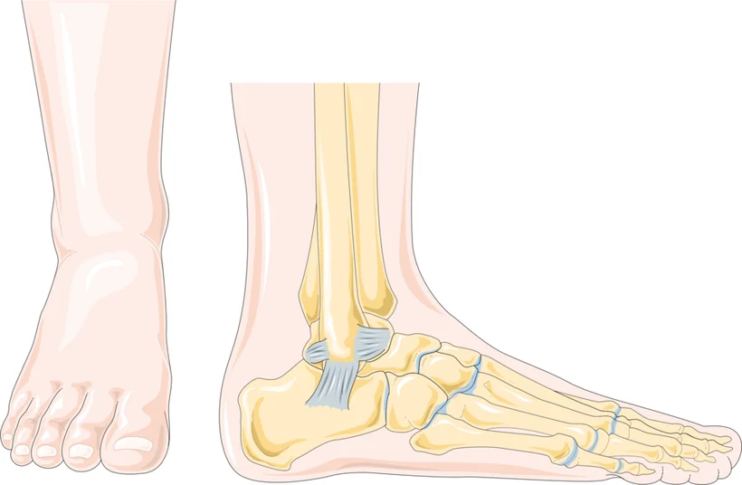

La distorsione laterale di caviglia è l'infortunio muscolo-scheletrico più frequente in assoluto: il piede ruota verso l'interno e i legamenti del lato esterno vengono stirati o si rompono.
Guarisce quasi sempre bene, ma ha un difetto: tende a ripetersi. Ed è proprio sulla prevenzione delle ricadute che il trattamento fa la differenza maggiore.

Come si manifesta
- Dolore e gonfiore sul versante esterno della caviglia, subito dopo il trauma.
- Un livido che compare nelle ore o nei giorni successivi, anche lontano dal punto dolente.
- Difficoltà a caricare il peso, zoppia.
- Sensazione di caviglia instabile nei giorni seguenti.
- Se gli episodi si ripetono e resta la sensazione che la caviglia «ceda», si parla di instabilità cronica di caviglia, che è una condizione a sé e va trattata come tale.[2]
Quando preoccuparsi
Vai al pronto soccorso se
- non riesci a fare quattro passi caricando il peso, né subito dopo il trauma né al momento della visita;
- fa male a premere sul bordo posteriore o sulla punta di uno dei due malleoli, o sulla base del quinto metatarso, o sullo scafoide;
- la caviglia appare deformata;
- il piede è freddo, pallido o insensibile.
Sono i criteri che in pronto soccorso servono a decidere se eseguire una radiografia. Se l'esame non viene fatto non è una scorciatoia: significa che il rischio di frattura è stato valutato e giudicato trascurabile.
Contatta il medico presto se
- dopo quattro o cinque giorni il dolore e il gonfiore non stanno migliorando affatto;
- la caviglia continua a cedere;
- compare dolore nella parte posteriore o interna, in sedi diverse da quella del trauma iniziale.
Cosa puoi fare tu
Fai
- Nelle prime ore, riposo relativo, ghiaccio e caviglia sollevata.
- Usa un bendaggio o una cavigliera e ricomincia presto a caricare, nei limiti del dolore: è la combinazione da cui si trae il maggior beneficio.[1]
- Comincia gli esercizi appena possibile: è il programma di esercizi, non il riposo, a far recuperare la stabilità.[1]
- Se fai sport, usa una cavigliera nei mesi successivi: riduce il rischio che si ripeta.[1]
- Per la terapia farmacologica chiedi al medico.
Non fare
- Non immobilizzare la caviglia per settimane: un periodo breve può aiutare su dolore e gonfiore, ma non è il trattamento.[1]
- Non tornare allo sport appena il dolore sparisce, se la stabilità non è tornata.
- Non affidarti alle sole terapie passive: negli studi i programmi di esercizio supervisionati danno risultati migliori.[1]
Perché la visita si ripete dopo qualche giorno
È un punto poco noto e molto utile. Subito dopo il trauma il dolore e il gonfiore rendono difficile capire quanto siano danneggiati i legamenti. La gravità della lesione si valuta in modo più attendibile con un esame fisico eseguito a quattro o cinque giorni dal trauma.[1]
Per questo una seconda valutazione a distanza di qualche giorno non è una ripetizione inutile: è il momento in cui si capisce davvero che cosa è successo e si imposta il percorso.
Le cure, e quanto funzionano
- Tape o cavigliera associati a un programma di esercizi: è la combinazione da cui la persona con una rottura legamentosa acuta trae il massimo beneficio.[1]
- Programmi di esercizio supervisionati, preferiti alle terapie passive, perché stimolano il recupero della stabilità funzionale dell'articolazione.[1]
- Immobilizzazione breve: può aiutare a ridurre dolore e gonfiore nella fase iniziale, ma non sostituisce quanto sopra.[1]
- Antinfiammatori: possono ridurre dolore e gonfiore, ma la linea guida invita a usarli con cautela, perché non sono privi di complicanze e potrebbero interferire con il processo naturale di guarigione.[1] Per la terapia farmacologica chiedi al medico.
- Chirurgia: riservata ai casi che non rispondono a un trattamento con esercizi condotto in modo completo e accurato.[1]
Evitare che si ripeta
Su questo la raccomandazione è esplicita: per prevenire le distorsioni laterali ricorrenti, la cavigliera va considerata un'opzione efficace.[1] Insieme al programma di esercizio è la parte del trattamento che conta di più nel medio periodo, e anche quella che più spesso viene trascurata una volta passato il dolore.
Alcuni sport comportano un rischio più alto di distorsione: saperlo serve a decidere quanto investire nella prevenzione.[1]
Quando serve lo specialista
Quando la caviglia continua a cedere, quando il dolore persiste oltre le settimane attese, o quando gli episodi si ripetono: lì il quadro non è più una distorsione semplice e va inquadrato come instabilità cronica.
La visita serve anche a riconoscere le lesioni che si accompagnano alla distorsione e che possono passare inosservate, e a discutere, numeri alla mano, quale trattamento sia più idoneo per la tua situazione.
Da dove vengono queste informazioni
- Vuurberg G, Hoorntje A, Wink LM, van der Doelen BFW, van den Bekerom MP, Dekker R, van Dijk CN, Krips R, Loogman MCM, Ridderikhof ML, Smithuis FF, Stufkens SAS, Verhagen EALM, de Bie RA, Kerkhoffs GMMJ. Diagnosis, treatment and prevention of ankle sprains: update of an evidence-based clinical guideline. Br J Sports Med 2018;52(15):956. doi:10.1136/bjsports-2017-098106
- Martin RL, Davenport TE, Fraser JJ, Sawdon-Bea J, Carcia CR, Carroll LA, Kivlan BR, Carreira D. Ankle stability and movement coordination impairments: lateral ankle ligament sprains revision 2021. Clinical practice guidelines linked to the ICF. J Orthop Sports Phys Ther 2021;51(4):CPG1–CPG80. doi:10.2519/jospt.2021.0302
Scheda aggiornata il 9 novembre 2026. Prossima revisione prevista entro novembre 2028.